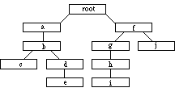

它包含对局树，包括所有的节点和属性，没有其它内容。这样 的文件格式可以准确记录并再现包含各属性列表的内在的规则的结构，不存在例外情况。如果一个对局需要在文档中存储一些信息，必定有一个(对局专用的)属性被定义为这个目的。
|  | 此树被按前序记录为:
SGF 示例: (;FF[4]C[root](;C[a];C[b](;C[c]) (;C[d];C[e])) (;C[f](;C[g];C[h];C[i]) (;C[j]))) | |
| 树结构的示例 | 用户可把树结构看做这样。 第一行是对局的主线，用于记录实战。 其它行是变化图。 |
请看 更多的示例 。
节点编号:
建议节点从 0 开始编号。存储在文件中的节点应当用此方法编号。
例如 (从文件起始处):
根=0, a=1, b=2, c=3, d=4, e=5, f=6, g=7, h=8, i=9, j=10.
SGF 文件中所有的属性标识及属性值使用 ASCII 字符集，除单文本和文本外。单文本和文本使用的字符集由 CA 属性决定。
"..." : 术语符号 [...] : 选项: 最多出现一次 {...} : 重复项: 任意次数，包括 0 次 (...) : 分组 | : 并列选项，只能选一个 斜体字: 参数，在其它地方有解释 |
多对局集 = 对局树 { 对局树 } 对局树 = "(" 序列 { 对局树 } ")" 序列 = 节点 { 节点 } 节点 = ";" { 属性 } 属性 = 属性标识 属性值 { 属性值 } 属性标识 = 大写字母 { 大写字母 } 属性值 = "[" 值 "]" 值 = (值类型 | 组合值类型) 值类型 = (无值 | 数 | 实数 | 程度 | 颜色 | 单文本 | 文本 | 点 | 走子 | 棋子) |
空白符 (空格,
制表符, 回车符, 换行符,
垂直制表符等)
可以出现在属性值、属性、节点、序列和对局树之间的任意位置。
有两种方式属性列表: 'list of' and 'elist of'.
'list of': 属性值 { 属性值 } 'elist of': ((属性值 { 属性值 }) | 无值) 换句话说，elist 是 list 或 "[]" |
2.2. 有关属性的一些说明
属性标志符是仅使用大写字母定义的关键字。目前每个标志符用一个或两个大写字母表示。
在一个节点中，属性的次序是不固定的。它可能在任何时候被任何应用软件修改和保存。而且，应用软件不应该依靠属性值在节点中的次序。属性值的次序允许被适当地改变。
只要不影响到本文定义的标准属性，任何人可以自由地定义附加的或专用的属性。
因此，如果有人编写了一个SGF阅读器，具有忽略未知属性的能力是一项重要的功能。应用软件在忽略未知或不规范的属性时，应当给出一条警告信息 。
在一个节点中，一个属性只允许出现一次，如，在一个节点中不能出现两个注释属性：
... ; C[comment1] B [dg] C[comment2] ; ...是一个错误。
每个属性具有属性类型。属性类型用于限制属性的位置，例如属性允许出现在哪些节点中，哪些属性允许出现在一个节点中组合使用。
2.2.1. 属性的类型 (目前有5类):
走子 走子属性描述一个走子，而非在某个位置放置一子。
走子属性不允许和设置属性处于同一个节点中。
注意：在根节点中包含走子属性是不好的风格。
(尽管这样不是被禁止的)
设置 设置属性描述在某个位置放置一子。
设置属性不允许和走子属性处于同一个节点中。
根 根属性只能出现在根结点中。
根节点是对局树中第一个节点, 即在一个多对局集中引导一个具有多个子节点的对局的节点。(例如，并非处于一个对局树中的另一个对局树分支)。
它们定义一些全局的“特性”例如棋盘大小、比赛类型、使用的文件格式等等。
对局信息 对局信息属性提供有关对局的一些信息(例如对局者、地点、时间、内容、结果、规则等等).
这些属性通常处于根节点中。
当把一个对局并入一个多对局集中，对局信息属性则处于第一个与其它对局区分开的节点中。
包含对局信息属性的节点被称为对局信息节点。
在一个对局树的任何一个路径中只能有一个对局信息节点。
例如，如果某个对局信息属性出现在一个节点中，那么该属性不允许出现在下述的任何一个节点中:
a) 从根节点到这个节点。
b) 此节点的子树中的节点。
无类型 无类型。这些属性没有特殊的类型，允许出现在多对局集中的任何位置。
因为走子属性和设置属性完全不同，所以节点也被分为两类：走子节点和设置节点。这对于数据库、与ISHI格式进行格式转换和一些其它应用很重要。
后继性 具有后继性的属性不仅影响包含此属性的节点而且影响该节点的所有的后继子节点直到另一个设置或者设置被清除。 就是说，一旦设置了该属性，所有该节点的子节点都继承了这个具有后继性特性的属性。 例如，属性 VW 限制了棋盘可见到区域，不仅限制了当前节点的棋盘可见区域，而且包括所有后继的节点。 这样，出现在一个分支开始处的属性 VW 对于整个分支都有效。 继承的停止，如果另一个属性出现，则新的属性值有效，或者属性值被清除，典型的方式是使用空值，例如 VW[] 。
属性标志符: 专用属性 必须不能 使用已经被标准属性使用过的标志符。你必须使用一个新的标志符。标志符应当由一个或两个大写组成。SGF 不限制超过两个字母的标志符的使用，但可能导致一些应用软件的中断。
属性值: 专用属性可以使用本文定义的值类型，或者使用它们自己定义的专用值类型。如果使用专用值类型，应用软件必须在所有的 "]"前加上转义符 "\"。否则将导致文件不可解析。如果值类型由两个简单类型组成，那么建议你的应用软件使用组合类型。
大写字母 = "A".."Z" 数字 = "0".."9" 无值 = "" 数 = [("+"|"-")] 数字 { 数字 } 实数 = 数 ["." 数字 { 数字 }] 程度 = ("1" | "2") 颜色 = ("B" | "W") 单文本 = { 任意字符 (详见下文) } 文本 = { 任意字符 (详见下文) } 点 = 由各棋类专门规定 走子 = 由各棋类专门规定 棋子 = 由各棋类专门规定 组合值 = 值类型 ":" 值类型 |
格式化:
软换行: 紧跟在 "\" 后面的换行符
(软换行被转换成 "", 就是说，被删除了)
硬换行: 任何其它情况下的换行符
注意:
一个简单的换行在不同的系统下有表示方式不同，例如
在DOS下，换行符用"LFCR" 表示，而在Unix下换行符用 "LF" 表示。
一个应用软件应当能很好地处理下列的全部换行符:
LF, CR, LFCR, CRLF.
应用软件必须能处理任意长度的文本。 文本应当被原样显示，超出显示范围的过长的部分可能被遮盖。
转义: "\" 是转义符。任何紧跟在 "\" 后面的字符将被逐字地插入 (例外情况: 空白字符仍然被转换成空格!)。 当在文本中使用 "]","\" 和 ":" (在压缩数据类型中除外) 等字符时必须被转义。
C[Meijin NR: yeah, k4 is won\ derful sweat NR: thank you! :\) dada NR: yup. I like this move too. It's a move only to be expected from a pro. I really like it :) jansteen 4d: Can anyone\ explain [me\] k4?]应该被显示为:
Meijin NR: yeah, k4 is wonderful sweat NR: thank you! :) dada NR: yup. I like this move too. It's a move only to be expected from a pro. I really like it :) jansteen 4d: Can anyone explain [me] k4?
格式化: 紧跟在 "\" 后面的换行符被转换成 "", 就是说，被删除了 (与文本类型相同)。其它换行符被转换为空格 (没有新行被显示!!)。
转义 (与文本类型相同): "\" 是转义符。任何紧跟在 "\" 后面的字符将被逐字地插入 (例外情况: 空白字符仍然被转换成空格!)。
当在文本中使用 "]","\" 和 ":" (在压缩数据类型中除外) 等字符时必须被转义。
3.4. 棋子
此类型用于指定放置棋子的点或片。如果一个棋类不区分棋子，例如围棋(GM[1])，棋子则被简化为点(点的说明见下文)，例如“棋子阵列
”被简化为“点阵”。
注意: 如果属性值允许使用“棋子列表”将被简化为“点阵”。
定义: 点阵: (点 | 点 ":" 点) 压缩点阵类型中的第一个点指定矩形的左上角，第二个点指定矩形的右下角。 1x1 矩形是合法的 - 即是单个点的点阵。点阵的定义允许由单个的点 [xy] 或矩形 [ul:lr] 构成的按任意次序的组合。另外，点只能被指定一次，就是说，重复和交叠是被禁止的。
详细情况请看 例子.